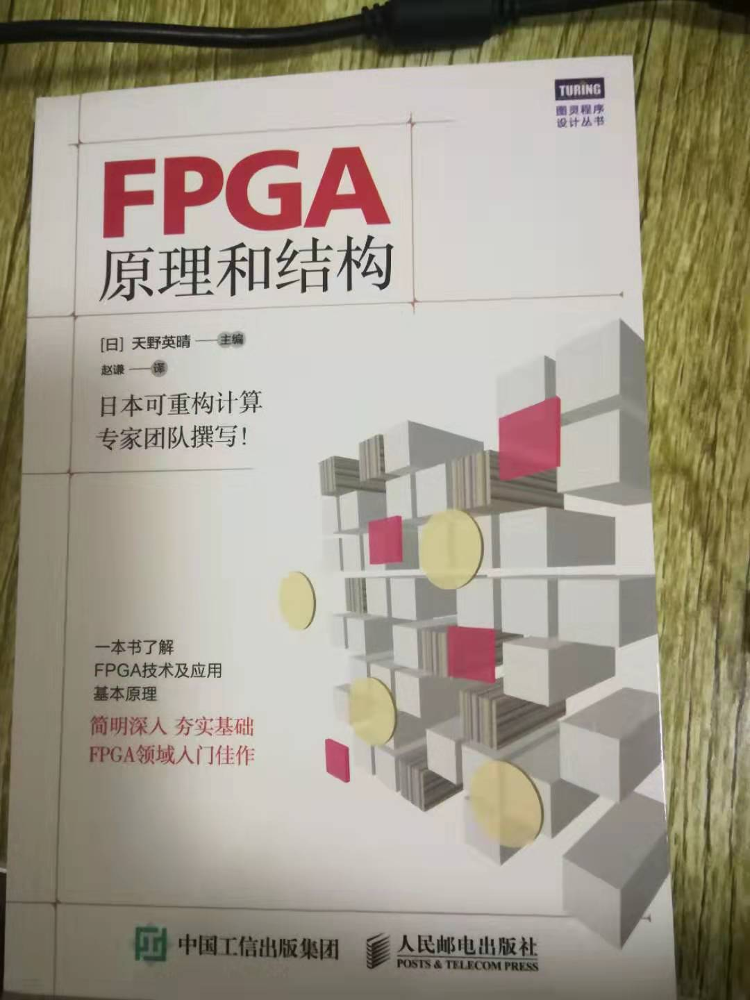

鼠标没电了，我的冲手机的插口，竟然充不了鼠标。既然这样，以后就锻炼自己没鼠标操作吧，毕竟这样更高效一点。重点不是这个啦。
我买了本书<FPGA原理与结构>

我发现自己在学习数电的时候，提不起兴趣，这一点对我来说是十分致命的。我是一个为兴趣而活的人，对一门学科没有好奇心，是不会快乐的。
可能是因为自己学软的方面的时间比较多，所以会多把注意力放到它们上面。
所以就买了这本书，培养自己这方面的兴趣。
既然拿到了这本书，就要马上看完，因为我的本性中有严重的拖延症。
如何看完这本书？
预估这本书看完大概需要4小时（以前也没注意过，大概猜一下）
时间从现在开始，到晚上睡觉前
一定要遵守5:00起床的规矩（10点睡不着十分痛苦，为了避免问题，5点起床才是解决问题的根症结。）
明早5:00准时打开，写博客哦！